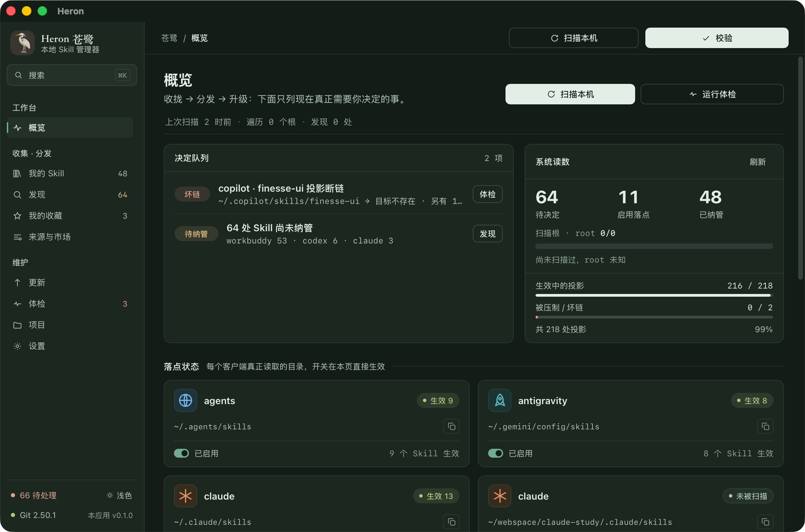

把散落在各处的 Agent Skill，
收拢成一份受版本管理的真实源
苍鹭静立一处，注视整片水面。扫描本机 12+ AI 编码客户端，去重收拢至 ~/.heron/skills/，按需单向投影，并以 Git 三方合并安全升级。

一源多投：看清磁盘上真正发生了什么
点击切换「收拢 / 分发 / 升级」三种状态，直观查看散落目录、单一真实源与 12+ AI 客户端之间的单向数据流向。
Heron 统一真相源 (Store)
先全量备份，Blake3 哈希去重，每个 Skill 独立 Git 仓库（main / upstream / v* tag）。
收拢 · 分发 · 升级，一条清晰闭环
告别在五个隐藏目录间手工复制粘贴。GUI 与 CLI 共用同一套 Rust 业务内核，遵循「计算计划 → 预览确认 → 备份执行」铁律。
安全收拢，哈希去重
多线程只读扫描本机已知路径与工作区。收拢前强制全量备份，Blake3 指纹自动合并重复拷贝，原位无缝替换为受管链接。
$ heron scan && heron adopt --all单向投影，显式开关
从唯一存储区按需分发到指定客户端或项目目录。每个 Skill 在每个落点是否真正生效（生效中 / 被压制 / 坏链 / 需重启）一目了然。
$ heron project code-review --on claude三方合并，不丢定制
每个 Skill 独立 Git 仓库。升级基于 git merge-tree 内存级三方合并，保留本地提示词微调，冲突时逐文件可视化解决，随时一键回滚。
$ heron upgrade --all && heron verify四种投影模式，直面真实平台的边界
装得上不等于客户端看得见。Heron 显式区分四种落点机制，在 macOS 与 Windows 上均无需管理员提权。
符号链接
macOS / Linux 首选。单点修改处处生效，零额外磁盘占用。
目录连接点
Windows 专属。普通用户账户直接创建，彻底告别管理员权限弹窗。
指针文件
生成轻量代理 SKILL.md，攻克部分扫描器忽略 symlink 目录的缺陷。
单向副本
全平台兜底。内置 E_DRIFTED 漂移检测，绝不静默覆盖外部手改内容。
12+ AI 客户端，诚实探测
通过目录结构、CLI 版本与 App Bundle 复合信号探测本机安装状态。未安装的客户端只置灰标注，绝不伪造「生效」，绝不擅改配置。
首要铁律：从不擅自破坏你的既有数据
所有危险边界都写进编译期契约与错误码，而非靠文档口头提醒。
先备份，再动文件
任何收拢或变更前强制完整备份至独立数据目录；备份失败则事务立刻中止。
拒绝隐式覆盖
投影目标遇到未经纳管的非空目录时立即停下报错，绝不强制删除替换。
病态嵌套只诊断不盲动
体检全程只读，精准定位重复、坏链与恶性嵌套，每一步修复都由你确认。
团队协同，一条命令复现
导出项目级锁文件，新人克隆仓库后 heron lock apply 即可精准对齐整套 Skill。
桌面端之外，完整的同源命令行
所有命令支持 --json 机器可读输出与 --data-dir 沙箱隔离，天然适配脚本与 CI。
# 1. 扫描本机并预览收拢计划（绝不盲动） $ heron scan $ heron adopt --all --dry-run # 2. 从任意 Git 仓库或 5 大内置市场安装 $ heron install https://github.com/owner/repo/tree/main/skills/code-review # 3. 团队锁文件导出与精准同步 $ heron lock export --write $ heron lock apply ✓ 48 skills managed · 216/216 projections verified · 0 drifted
macOS (Apple Silicon)
Heron_0.1.0_aarch64.dmg · macOS 12+
macOS (Intel)
Heron_0.1.0_x64.dmg · macOS 12+
Windows x64
Heron_0.1.0_x64-setup.exe · Win10 1803+
环境要求：本机需安装 Git 2.38+（用于 git merge-tree 三方合并）。首次打开未签名安装包放行指引见 docs/SIGNING.md。